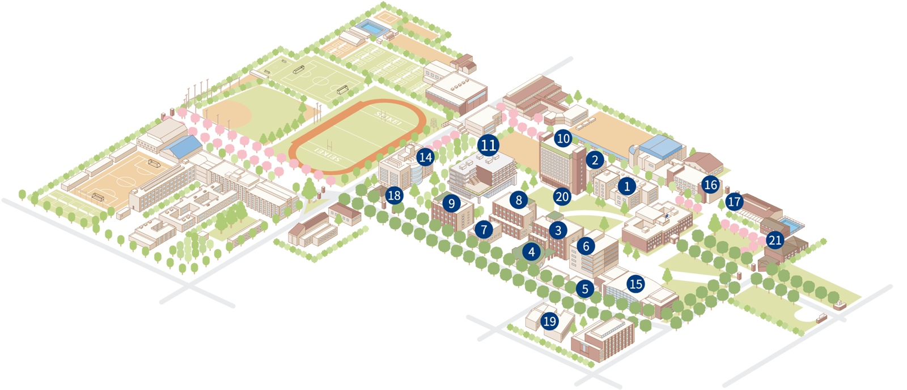

Home
Home- アクセス Access
連絡先 Contact
成蹊大学 理工学部 理工学科
機能性分子触媒研究室
〒180-8633 東京都武蔵野市吉祥寺北町3丁目3-1
Tel: 0422-37-3792（研究室直通）
E-mail: akiko-inagaki[at]st.seikei.ac.jp
*上記e-mailアドレスは、[at]を@に置き換えて下さい
研究室へのアクセス Access
機能性分子触媒研究室実験室は ⓫ 11号館5階共同研究室5-4、稲垣居室は2階215号室です
成蹊大学 キャンパスマップ
成蹊大学へのアクセスは、大学Webサイトの交通アクセスのページをご覧ください。
成蹊大学 交通アクセス
